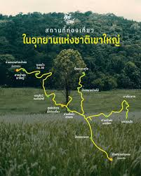

เขาใหญ่
อุทยานแห่งชาติ Khao Yai National Park เป็นแหล่งท่องเที่ยวทางธรรมชาติที่สำคัญของประเทศไทย มีความอุดมสมบูรณ์ของป่าไม้ สัตว์ป่า และน้ำตกหลายแห่ง จึงได้รับความนิยมจากนักท่องเที่ยวทั้งชาวไทยและชาวต่างประเทศเป็นจำนวนมาก
